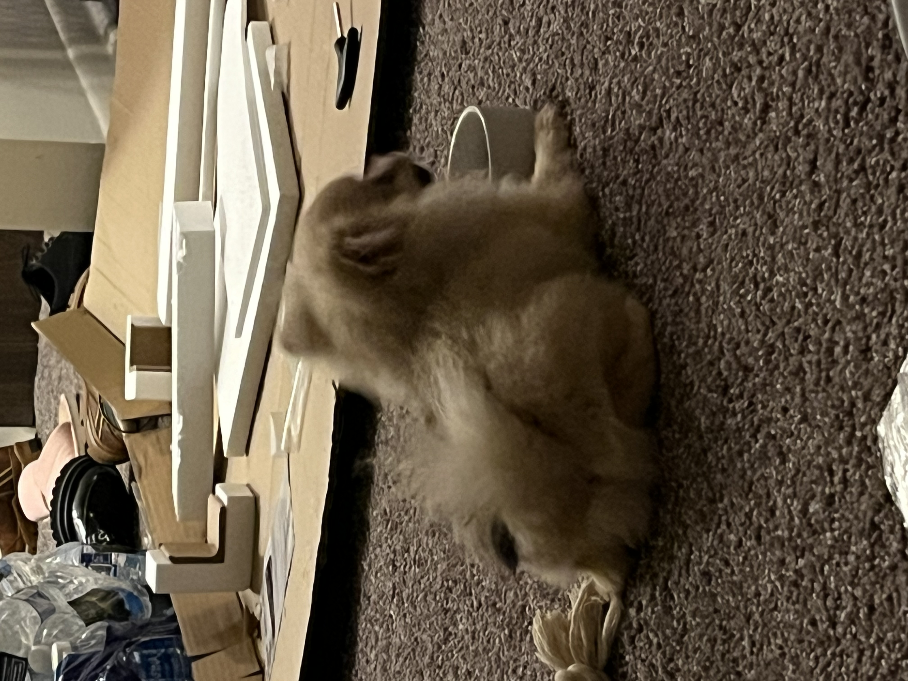

1. Bacon Q Dog

2. bacon.jpg
3. Brown labradoodle wearing colorful lei
4. Bacon Q. Dog is a 9yr old labradoodle. He prefers to spend his days lounging among the three different beds/couches that his family has gifted him. He enjoys a walk or two around the neighborhood, as long as he can pretend that he doesn't see any of the other animals to avoid the embarrassment of not wanting to admit he has no wolf-like skills in chasing them.
5. At night just as the rest of the family is ready to relax, Bacon suddenly wants to release all of his energy. He will place his toys on a mini couch and frantically drag the couch around, giving his toys "a ride." There is also a lot of rolling. Lots and lots of rolling.
6. Photo Gallery

7. bacon_bandana.JPG
8. Brown labradoodle wearing an orange bandana

9. bacon_graduation.JPG
10. Small labradoodle puppy wearing a graduation cap and gown.
11. bacon_agility.mov
12. Girl and dog demonstrating a sit and stay procedure

13. bacon_halloween.JPG
14. Brown labradoodle wearing a pirate costume
15. Likes
- 16. Belly rubs
- 17. Playing tug-of-war
- 18. Sneaking onto the couch
2.1 Sage

2. sage_classic.jpeg
3. A smiling golden retriever lying on the bed
4. Sage is a 3 year old Golden Retriever. She is one of the laziest dogs. She loves sneaking into the bedroom and hopping onto the neatest bed. She also loves riding in a car with the windows open feeling the wind and air. She enjoys walking, only if you take her for a ride to a big arboretum or park. Walking around the neighborhood is not necessarily her cup of tea.
5. Her favorite food is corn. One day, she stole corn on the cob from the dining table, which was surprising because she is normally gentle and polite. She took the stolen corn to the patio and enjoyed her meal by herself. Unfortunately, the corn turned out to be unripe, so she ended up vomiting it all later.
6. Photo Gallery

7. sage_young.jpeg
8. A young golden retriever is laying down

9. sage_car.jpeg
10. A happy golden retriever is sitting in the car's backseat

11. sage_sleep.jpeg
12. A golden retriever is sleeping on the couch

13. sage_pet.jpeg
14. A man's hand is petting a golden retriever's neck
15. Likes
- 16. Carrot
- 17. Nap
- 18. Big park
3.1 Rocket

2. rocket_primary.jpg
3. Cute, small and yellow pomeranian
4. Rocket (also named huihui) is a 6-month pomeranian puppy with big eyes and a small, black cute nose. Rocket is named rocket because he runs so fast and energetic all day without even having some rest. Rocket loves to carry his little toy walking around the house and jumping towards my bed.
5. Rocket is friendly to all human beings. He will be a little shy at first, but will ‘say hi’ to you after a few seconds. He is also friendly to dogs, especially the small breed, because the large size dogs are hard for him to smell lol. If you meet rocket, don’t hesitate to say hi to him!! He will be super happy the whole day.
6. Photo Gallery
7. rocket_dinner.jpg
8. Rocket is eating his dinner

9. rocket_wants_to_go_out.jpg
10. Rocket wants to come out of the playpen

11. rocket_childhood.jpg
12. Rocket is in his childhood.
13. rocket_kitchen_clip.mp4
14. Rocket is trying to hunt the kitchen clip.
15. Likes
- 16. Chewing bones
- 17. Chasing
- 18. Running
4.1 Fitz

2. Fitz.jpeg
3. Boston terrier watching a tennis ball at the table.
4. Loves chasings tennis balls, chipmunks, squirrels, and birds. Often found sitting by the fire in wintertime, and in sun patches when available. He’s energetic, mischievous, and easily bored. He loves people and gets grumpy if left without a lap too long.
5. Loves barking up trees, running around on the lawn, and digging in the dirt looking for moles. He especially likes getting treats and whines when he comes inside and doesn’t get a snack.
6. Photo Gallery

7. Fitz_standing_on_chair.jpeg
8. Fitz standing on a wooden chair, looking at the camera.

9. Fitz_sleeping.jpeg
10. Fitz sleeping in a fuzzy dog bed.

11. Fitz_on_the_lawn.jpeg
12. Fitz laying out on the lawn in the grass.

13. Fitz_laying_in_bed.jpeg
14. Fitz sleeping with his face buried in a plaid blanket, only his head is visible.
15. Likes
- 16. Blankets
- 17. Being warm
- 18. Barking
5.1 Smoothie

2. Smoothie_staring.jpg
3. Long-hair beautiful, orange tabby cat
4. Smoothie has been dubbed the "world's most photogenic cat", and her emerald eyes and golden fur have even inspired a mural in New Zealand. Smoothie also has an aptly-named brother named Milkshake, and the two are often featured together across social media platforms.
5. She became an internet sensation with 2.3 million followers on her smoothiethecat Instagram account.
6. Photo Gallery

7. Smoothie_yawn.jpg
8. Smoothie is yawing.

9.Smoothie_lying.jpg
10. Smoothie is lying.
11. Smoothie_staring.jpg
12. Smoothie is staring at you.

13. Smoothie_curious.jpg
14. Smoothie is curious about the world
15. Likes
- 16. Playing
- 17. Sun Gazing
- 18. Snacks